← 返回首页
VLA / 策略架构 · 5
2.99 VLA / 策略架构 π系列 VLA 2610.41009
STAR 针对 VLA 后层动作表征中任务相关视觉信息衰减的问题，提出一种无需训练、无需修改模型权重或架构的推理时干预方法。它在 Transformer 最后三分之一层（ρ=2/3）对残差更新进行跨层指数移动平均，并依据近期末端执行器的位置、方向等本体感知轨迹自适应调节混合强度，在快速转向或精细调整时采取更保守的干预。STAR 在 π0.5、GR00T-N1.5 等模型和机器人操作基准上增强了后层目标感知，主实验的平均任务成功率提高 4.0 个百分点。
📐 查看论文原版模型结构图与讲解（Figure 5） 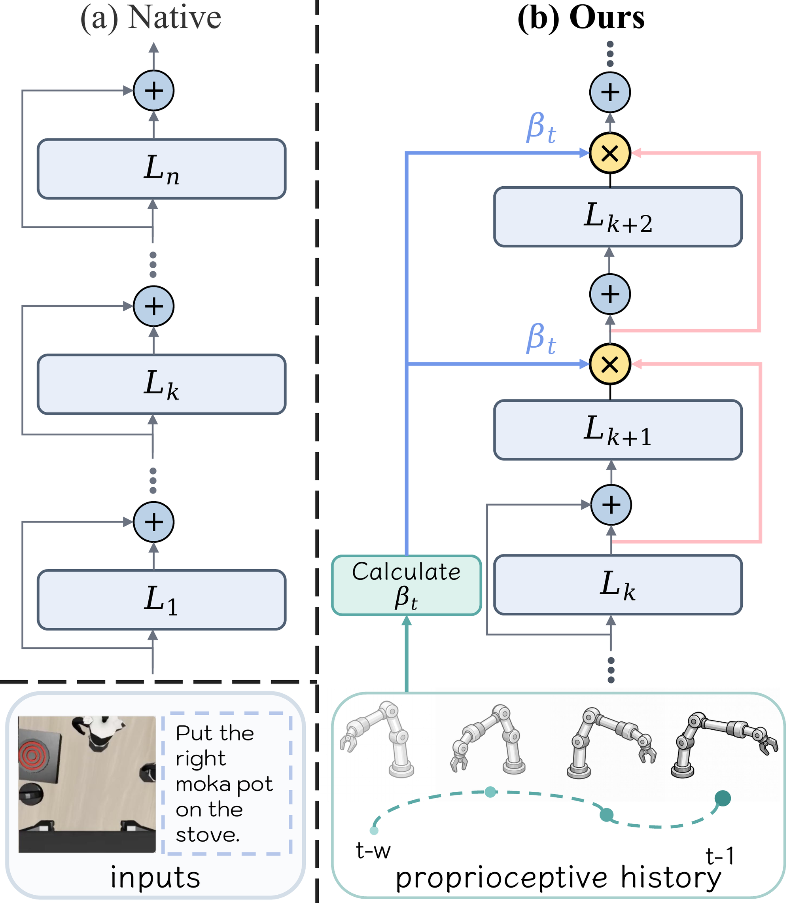
本体感知历史输入 ：在动作生成步 $t$，模型首先汇聚截至当前时刻的 proprioceptive history（本体感知历史），形成刻画机器人运动状态及短期动态的历史特征；该分支不直接预测动作，而是为当前步计算自适应平滑强度。步级 EMA 系数估计 ：历史特征被映射为 step-level EMA coefficient $\beta_t$。图中蓝色箭头表示 $\beta_t$ 的生成与传递；同一时间步内，各网络层共享该系数，从而依据当前运动状态统一调节信息保留与更新幅度。逐层动量更新 ：对第 $\ell$ 层，模型将该层的新更新量与跨层传入的 update momentum 进行 EMA 混合，可概括为 $m_t^{(\ell)}=\beta_t m_t^{(\ell-1)}+(1-\beta_t)\Delta h_t^{(\ell)}$。粉色箭头表示跨层传播的更新动量，使早期层的更新连续影响后续层。动作生成输出 ：混合后的 $m_t^{(\ell)}$ 逐层注入隐藏特征，最终由末层动作头产生时刻 $t$ 的 action。较大的 $\beta_t$ 强化历史动量与层间一致性，较小的 $\beta_t$ 则提高当前层新信息的占比，实现状态自适应的动作平滑。进入深读卡片查看完整方法与千问问答 →
2.98 VLA / 策略架构 π系列 VLA 2610.41408
SACQ 是面向 VLA 的超低比特仅权重量化框架，结合基于投影功能角色的结构感知码本拟合、按最终动作误差分配精度的混合比特策略，以及含二阶误差补偿和动作级校准的两阶段量化后优化。在 GR00T N1.7 上，语言/动作权重压至平均 1.5 bit 后，SACQ 在四个 LIBERO 套件上取得 93.85% 平均成功率，仅比 BF16 的 94.10% 低 0.25 个百分点，同时将模型内存从 5.677 GB 降至 1.175 GB（缩减 4.83 倍）。配合 INT8 激活和低精度注意力时，其成功率为 93.55%，推理速度较 BF16 提升 1.51 倍；在 SimplER 上以 2 bit 权重取得 63.76% 的 Visual Matching 和 52.27% 的 Variant Aggregation 成功率。
📐 查看论文原版模型结构图与讲解（Figure 1） 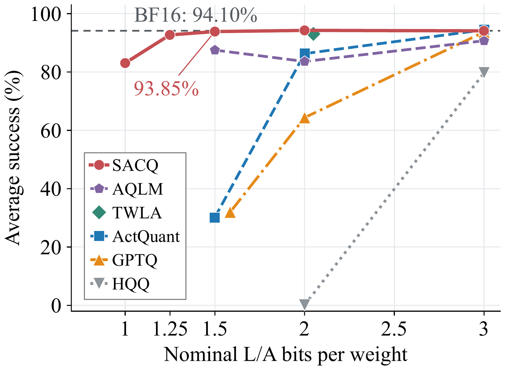
图表性质 ：Figure 1 的题注仅为 “GR00T N1.7 success rate on LIBERO”，表明该图展示的是 GR00T N1.7 在 LIBERO 基准上的成功率评测，而非包含输入、编码器、策略头及动作输出的数据流模型结构图。评测对象与指标 ：图中核心对象应为策略模型 GR00T N1.7，输出指标为任务成功率 $S=N_{\mathrm{success}}/N_{\mathrm{total}}$；LIBERO 通常按任务或任务套件汇总结果，但现有题注未给出横纵轴、对比方法、误差条或具体数值，不能据此准确还原。结构信息边界 ：原图题注与所给“方法上下文”均未提供模块英文名称、输入输出张量、特征表示或 Stage I $\rightarrow$ Stage II 流程，因此无法可靠写出逐模块结构详解；若补充 Figure 1 原图或论文方法章节，方可按真实标注解析视觉输入、语言条件、策略表示与动作预测链路。进入深读卡片查看完整方法与千问问答 →
2.98 VLA / 策略架构 π系列 VLA 2610.41609
论文在LIBERO-Goal仿真中以固定初始状态、仅改变指令的配对协议，测试5个模型家族的6个VLA检查点，并分别测量机器人是否启动、完成了哪个任务以及指令决定了什么。空指令下，全部6个检查点在每个回合都会启动（非启动率均为0.0%），其中5个检查点在30.5%–94.0%的回合中完成了未被指定的任务；两个GR00T检查点面对不可执行指令时仍有61.0%–73.0%的回合完成意外任务。三种启动抑制方法中，安全前缀对6个检查点均无效，首个动作块差异门控可在6个检查点中的5个上抑制非任务输入，而无动作微调虽使非任务输入下的任务完成率降为零，却不能稳定保持静止，也无法抑制不可执行指令触发的启动。
📐 查看论文原版模型结构图与讲解（Figure 1） 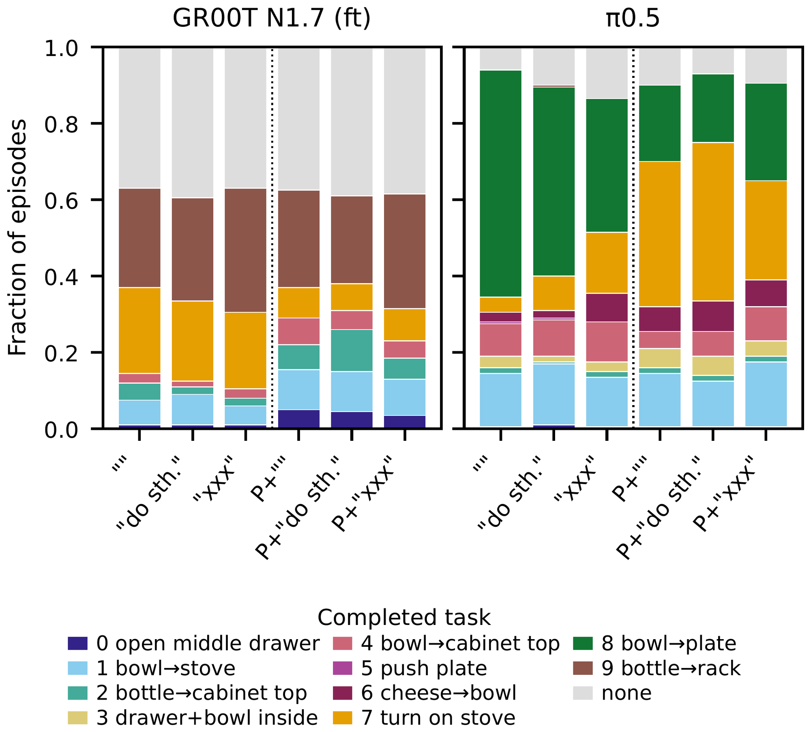
输入条件（Conditions） ：图 1 并非模型计算图，而是行为结果总览。实验分别向 $\mathrm{GROOT\ R}$（左）与 $\pi_5$（右）输入 Empty、Neutral、Nonsense 三类条件指令，并比较无前缀与加入 prefix（P）两种设置。策略执行（Policy Rollout） ：每个检查点依据当前条件生成机器人动作序列 $\tau=(a_1,\ldots,a_T)$，最终将一次 episode 映射为离散完成结果 $y\in\{\text{十项任务},\text{none}\}$；“do sth.”是“do something”的缩写。堆叠统计（Stacked Bars） ：每根柱将十种任务及“none”共十一类结果按频次堆叠，直接展示 $p(y\mid c,P)$ 或 $p(y\mid c,\neg P)$；颜色区段对应具体完成任务，整体柱高代表全部评测回合。核心观察（Comparison） ：多数回合都会完成某项任务，但两个检查点的最高频任务不同。加入前缀主要改变任务类别分布，即 $\arg\max_y p(y\mid c,P)$，却未提高“none”的比例，说明前缀重定向了行为，而非导致更多执行失败。进入深读卡片查看完整方法与千问问答 →
2.95 VLA / 策略架构 π系列 VLA 2610.41275
TRACE面向具身视觉跟踪，在冻结Qwen3-0.6B视觉语言骨干与识别模块的情况下，仅用PPO更新航点规划头；PPO提升了EVT-Bench三个设置中的成功率和跟随率，但使干扰目标场景的碰撞率从11.01%升至13.78%。其执行时风险门控头利用84项目标状态线索预测碰撞风险，超过阈值时仅缩放下一航点的平移分量并保留偏航，单步开销约50微秒且修改不到2%的动作。配对评测中，TRACE将干扰跟踪碰撞率降低3.96个百分点至9.83%，同时将成功率和跟随率分别提高2.03和2.14个百分点；并发评测复现了3.77个百分点的降幅，而同臂空对照仅变化0.29个百分点。
📐 查看论文原版模型结构图与讲解（Figure 1） 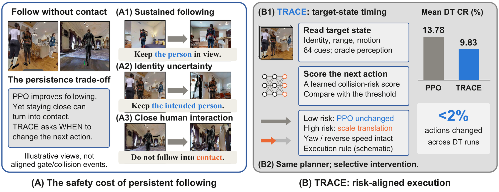
任务输入与监督跟踪器 ：每步输入语言指令 $I$ 与第一视角 RGB 历史 $O_t$；Vision Encoder、Qwen3-0.6B Language Backbone 和 Recognition Adapter 联合编码目标身份及视觉上下文，Planner Head 输出航点张量 $W_t\in\mathbb{R}^{8\times3}$，其中 $w_{i,t}=(v_x,v_y,\omega)$。规划头强化学习 ：SFT 后冻结视觉编码器、语言骨干与识别适配器，仅对 Planner Head 进行 PPO，使机器人在干扰者和身份歧义下更持久地跟随语言指定人物；图 A 强调这种持续性虽减少丢失目标，却会使部分 distracted tracking 轨迹最终发生接触。TRACE 风险门控 ：图 B 中，TRACE 根据 EVT-Bench 自带检测与身份信息构成的 $84$ 维目标状态线索，对下一动作计算风险分数 $r_t$，并与阈值 $\tau$ 比较；该模块位于 PPO 航点输出与机器人执行器之间，不反向改动跟踪网络。选择性动作修正与闭环执行 ：若 $r_t<\tau$，首航点 $w_{1,t}$ 原样通过；若 $r_t\ge\tau$，仅缩放平移分量 $(v_x,v_y)$，保持偏航速度 $\omega$ 不变。动作经 PD Controller 执行后重新观测并规划；超过 $98\%$ 的时间步门控不触发。进入深读卡片查看完整方法与千问问答 →
2.93 VLA / 策略架构 π系列 VLA 2610.42021
Nexus-VLA 是一个从未配对人类视频与机器人示范中进行单阶段端到端联合训练的 VLA 框架，通过意图、空间、运动和交互四级跨具身语义监督，学习共享的层次语义潜变量。该潜变量与视觉—语言特征共同用于连续动作生成，推理时无需显式生成中间语义；模型在 RoboCasa-GR1 上达到 80.5% 的任务成功率，并在 OOD 场景和真实机器人实验中表现出较强泛化能力。
📐 查看论文原版模型结构图与讲解（Figure 1） 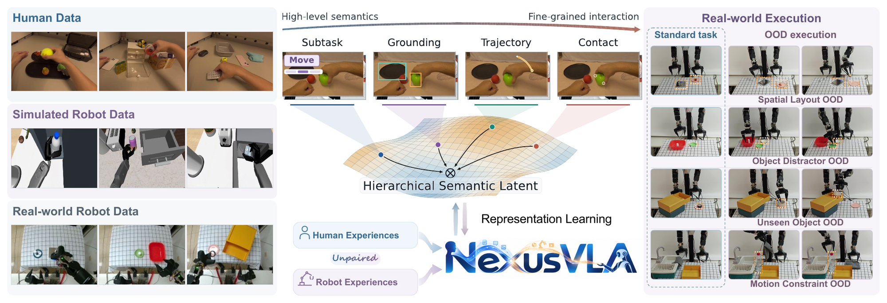
输入/跨具身经验 ：现有题注仅表明 Nexus-VLA 同时利用 human experiences 与 robot experiences，但未给出 Figure 1 原图，因而无法确认视觉、语言、状态或动作输入的具体名称、维度及数据流向。Hierarchical Semantic Latent（层级语义潜变量） ：题注明确其承担跨具身知识桥接，但未说明层级数量、编码器/解码器结构或潜变量符号；若直接写成 $z_t$、$z_t^{(l)}$ 等将属于无依据补充。知识迁移与输出 ：可确认该潜空间服务于 cross-embodiment knowledge transfer 和 real-world generalization；但缺少方法章节与图中标注，无法准确描述策略 $\pi$、动作序列、训练阶段 Stage I/II 或损失函数。请提供 Figure 1 图片或方法原文后再作逐模块解析。进入深读卡片查看完整方法与千问问答 →
机器人 RL / 后训练 · 4
2.95 机器人 RL / 后训练 π系列 机器人 RL 2610.41377
论文提出 MolmoSpaces-CommonSense：一个以发展认知科学分类为基础的机器人操作评测基准，涵盖物理推理、可供性和物体恒存性三类能力，并在 1,009 个室内场景、413 种物体上构建遮挡、覆盖、容纳、部件级抓取和隐藏物体等 8 类闭环任务。对 π0.5、MolmoAct2 和 DreamZero 等零样本通用策略的评测显示，干扰物增多时成功率下降超过 50%，杂乱场景中约 30% 的动作作用于错误物体；可供性敏感抓取的总体成功率约 25%，正确部件选择率仅约 50%。论文还发现，基于 VLM 的成功判定难以可靠评估这些场景中的执行轨迹，说明瓶颈贯穿感知、推理、控制与评测链条。
📐 查看论文原版模型结构图与讲解（Figure 1） 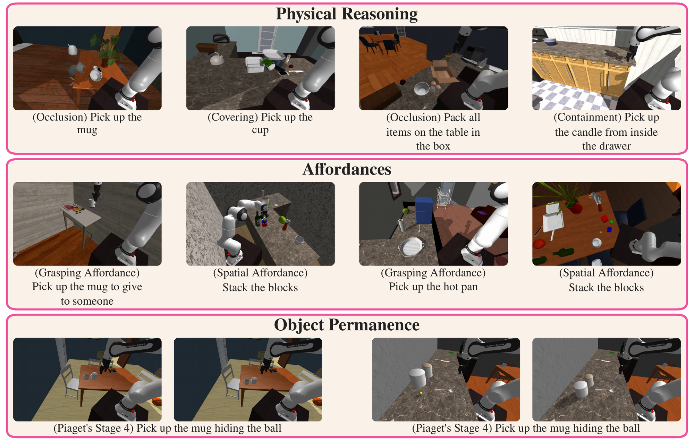
任务分类输入（Commonsense Taxonomy） ：Figure 1 并非神经网络计算图，而是以具身操作中的部分可观测情境与动作要求为输入，将能力集合组织为 $\mathcal{C}=\{\text{Physical Reasoning},\text{Affordances},\text{Object Permanence}\}$，再映射为 MolmoSpaces 中的测试任务。物理推理（Physical Reasoning） ：细分为遮挡（Occlusion）、覆盖（Covering）与容纳（Containment）。策略接收当前观测 $o_t$ 与目标指令 $g$，需在目标被杂物遮住、被物体盖住或位于抽屉等容器内时，输出动作 $a_t$，主动避开或移除干扰物，而非仅预测隐藏物体。可供性（Affordances） ：包含空间可供性（Spatial Affordances）与抓取可供性（Grasping Affordances）。前者依据表面布局和几何尺寸约束动作，例如堆叠时满足支撑块尺寸不小于上层块；后者要求策略依据物体形状及可接近区域选择有效抓取与操作方式。物体恒存与任务实例化（Object Permanence & Instantiation） ：该分支检验目标离开即时视野后，策略能否维持其存在性与位置表征。各分类最终被实例化为 MolmoSpaces 闭环任务，以轨迹 $\tau=(o_0,a_0,\ldots,o_T)$ 统一评估通用操作策略的感知、记忆、推理和执行能力。进入深读卡片查看完整方法与千问问答 →
2.74 机器人 RL / 后训练 π系列 机器人 RL 2610.41216
TinyAstral提出两阶段机器人智能体方案：先在冻结的开放权重教师模型上，通过带配对统计检验的递归自改进持续演化工具、反馈、记忆与故障恢复等harness组件，再冻结harness并用教师的推理、工具调用及失败恢复轨迹蒸馏0.8B–4B学生模型。RoboTwin上，harness演化将教师成功率从33.4%提升至63.6%，最终4B学生达到62.8%；四个harness版本对应的4B学生依次达到36.2%、49.8%、60.0%和62.8%，表明系统层面的改进可稳定迁移到小模型。最终4B模型覆盖六个基准，在未参与训练或RSI的三个基准上接近同一harness中的552B规划器，并在实测部署任务中仅使用约五分之一的教师加速器时间。
📐 查看论文原版模型结构图与讲解（Figure 1） 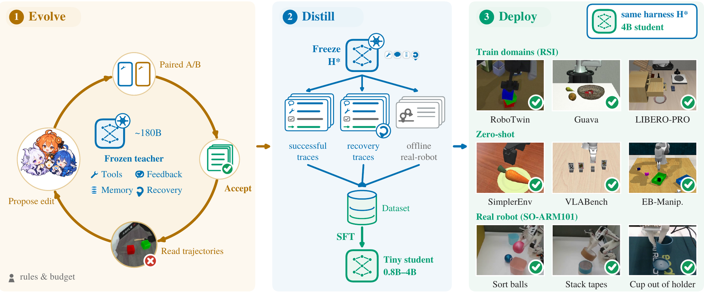
阶段一—Harness Evolution ：人类预先设定规则、预算与统计门限；冻结教师规划器 $\pi_T$ 经工具、反馈、记忆和恢复模块组成的执行框架 $H$ 产生轨迹。前沿 LLM 智能体 Master 读取轨迹并提出 $H\!\rightarrow\!H'$ 的编辑，全程不更新模型权重。配对筛选—Statistical Gate ：候选 $H'$ 与当前 $H$ 在相同 selection seeds 上进行配对 A/B 测试；仅当严格成功率 $S$ 通过预注册统计检验时才接受修改，循环迭代得到最终框架 $H^*$，避免以偶然收益驱动演化。阶段二—Trajectory Distillation ：冻结 $H^*$，收集教师在其中执行的完整轨迹 $\tau=\{o_t,\text{reasoning}_t,a_t,r_t\}_{t=1}^{T}$，其中每轮仅生成一个工具调用 $a_t$；数据保留推理、失败反馈与 recovery branches，并与离线真实机器人监督混合，训练 $0.8$B–$4$B 的学生 $\pi_S$。部署与评测—Student-in-the-Loop ：以 $\pi_S$ 替换 $\pi_T$，但继续复用同一 $H^*$；规划器决定“做什么”，框架负责感知、抓放几何、无碰规划、闭环纠错及 done 谓词核验。评测覆盖三个训练域、三个未见基准及 SO-ARM101 的三项闭环真机任务。进入深读卡片查看完整方法与千问问答 →
2.69 机器人 RL / 后训练 π系列 机器人 RL 2610.41877
Movens-Zero 是面向人形机器人的多模态运动基础模型，基于 Movens-5M 数据集，以统一全模态骨干、跨七类生成任务的混合流匹配动作专家和多模态实时分块机制，将文本、语音、音乐及视频指令转化为可闭环执行的运动。Movens-5M 从网络视频构建，包含1500万人体运动序列、500万条经执行验证的人形机器人运动及超过1万小时数据；动作专家从6420万扩展至9.105亿参数时，文本 R@3 从10.30%升至62.57%。在8192对专家验证样本组成的 Movens-Intent 基准上，模型取得文本 R@3 62.57%、语音 R@3 74.30%，并将视频 W-MPJPE100 降至49.1毫米。
📐 查看论文原版模型结构图与讲解（Figure 33） 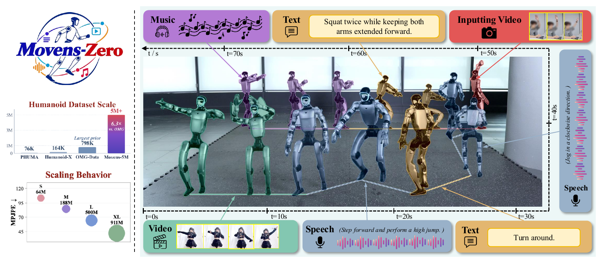
多模态意图输入（Omni-Modal Input） ：文本指令、采样 RGB 帧以及语音/音乐共同输入冻结的全模态上下文编码器；语音与音乐共享音频前端，仅以任务提示区分，所得条件 token 经线性投影对齐动作专家宽度 $D$。机器人中心运动表示（Robot-Centric Motion Representation） ：Unitree G1 每帧编码为 $\mathbf{x}_j\in\mathbb{R}^{40}$，包含 29 维关节角、2 维平面根位移、6 维根朝向、1 维世界系根高度和2维足接触。位移为 $[\mathbf A_n^\top(\mathbf r_j-\mathbf r_{j-1})]_{xy}$，锚点 $\mathbf A_n$ 在运动块内固定。流式动作专家（Flow-based Action Expert） ：条件 token 与当前机器人状态 token、噪声未来运动 token $z_t$ 联合注意；DiT 动作专家预测条件速度场 $v_\theta(z_t,t,c)$，沿流积分将噪声逐步变换为未来运动块。模型规模仅改变宽度、深度与头数，单头维度固定为 64。解码与实时执行（Generation–Execution） ：解码时正交化朝向的前两列，以 $\mathbf A_n$ 恢复世界旋转，并从最新根位置累积平面位移；生成块按共享40通道格式转为可执行关节轨迹与足接触状态，实现从理解、生成到人形机器人实时执行的闭环。进入深读卡片查看完整方法与千问问答 →
2.30 机器人 RL / 后训练 π系列 机器人 RL 2610.41625
RTPolicy是一种面向边缘设备的多视角视觉运动策略，采用冻结的DINOv3 ConvNeXt编码器、视角感知特征融合与视觉压缩，并通过四步流匹配DiT生成动作块；在三视角实机配置中，它将视觉条件从900个稠密token压缩到12个，减少75倍。其在RoboTwin 2.0的50项单任务干净评测中取得52.26%的平均成功率，高于π0的46.4%；在真实双臂平台上平均成功率为72.0%，INT16下在RDK S600达到30.35毫秒（32.9 Hz），在RDK S100达到149.72毫秒（6.7 Hz）。
📐 查看论文原版模型结构图与讲解（Figure 1） 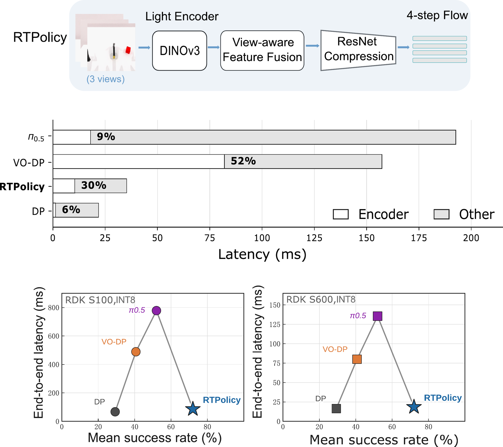
多视角输入与轻量编码 ：策略在控制步 $t$ 接收 $V$ 路图像 $\{I_t^{(v)}\}_{v=1}^{V}$ 和状态前缀 $S_t\in\mathbb{R}^{T_o\times d_a}$；冻结的 DINOv3 ConvNeXt 编码器逐视角提取稠密特征 $F_t^{(v)}=E(I_t^{(v)})\in\mathbb{R}^{P\times d_v}$，仅训练后续视觉适配与动作模块。View-Aware Feature Fusion（视角感知融合） ：各视角 token 加入可学习视角嵌入 $e_v$，先经单块 Intra-view Transformer 得到 $R_t^{(v)}=\mathcal{T}_{\mathrm{intra}}(F_t^{(v)}+e_v)$，再沿 token 维拼接，并由 Cross-view Transformer 交换跨相机信息，输出 $\widetilde F_t\in\mathbb{R}^{VP\times d_v}$。Visual Compression 与动作生成 ：压缩模块将融合后的长视觉序列降维为紧凑条件，并与固定条件 $S_t$共同输入 flow-based action model；模型从噪声动作轨迹出发，以四步流积分逐步去噪，生成仅含未来动作的分块 $A_t\in\mathbb{R}^{H_a\times d_a}$，其中 $\tau\in[0,1]$ 表示流时间。计算开销与部署表现 ：中图显示 VO-DP 的编码器占总延迟 $52\%$，而 $\pi_{0.5}$ 虽编码器占比更小，却因多视角视觉条件产生更高延迟；底图在 RDK S100/S600 的 INT8 部署中对比端到端延迟与平均成功率，RTPolicy 在两设备上同时取得最高平均成功率和低延迟，成功率采用 GPU 评测配置。进入深读卡片查看完整方法与千问问答 →
导航 / VLN / SLAM · 7
3.99 导航 / VLN / SLAM 导航 VLN 2610.41446
论文提出面向空中视觉语言导航的 GeoReasoner，将传统反应式试错搜索转化为地理空间引导的主动推理。该框架依次通过搜索前地理空间推理构建区域级目标假设、假设驱动的主动探索获取判别性证据，并利用基于对抗辩论的一致性感知验证综合语言、地理、视觉与历史信息后决定是否停止。在真实世界 CityNav 基准上，GeoReasoner 取得零样本空中 VLN 方法的新 SOTA，并展现出可与监督方法竞争的性能；节选未提供具体数值指标。
📐 查看论文原版模型结构图与讲解（Figure 1） 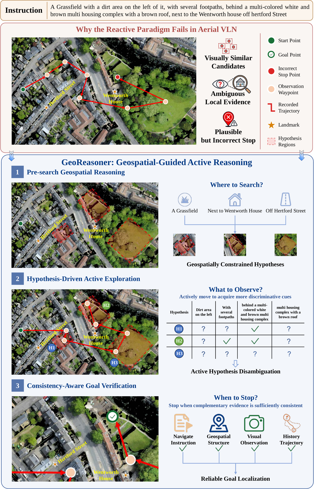
输入与地理先验约束（Geospatial Prior） ：框架接收语言指令 $I$、无人机当前观测 $o_t$ 与位姿 $p_t$；GeoReasoner 在实际搜索前检索并推理地理空间知识 $K_{\mathrm{geo}}$，形成候选目标假设集 $\mathcal{H}_0=\{h_i\}$，再以先验一致性筛得 $\mathcal{H}\subseteq\mathcal{H}_0$，区别于仅依赖被动观测试错的 reactive Aerial VLN。目标假设推理（Goal Hypothesis Reasoning） ：将指令语义、视觉证据与候选地点属性联合编码，为每个 $h_i$ 计算后验分数 $P(h_i\mid I,o_{\le t},K_{\mathrm{geo}})$；该模块输出竞争假设及其置信度，而非直接锁定单一目标，从而显式缩小搜索空间。主动辨别证据获取（Active Evidence Acquisition） ：针对当前难以区分的候选，策略 $\pi(a_t\mid s_t,\mathcal{H})$ 选择最具信息增益的航行动作 $a_t$，主动获得新观测 $o_{t+1}$，并递归更新各假设后验，实现“为消歧而观察”而非盲目探索。多源一致性验证与停止（Multi-source Consistency Verification） ：终止前联合核验视觉、语言、地理位置及空间关系证据；仅当最优假设 $h^\*$ 的跨源一致性 $C(h^\*)$ 与置信度均超过阈值时输出目标并停止，否则返回主动搜索环路继续取证。进入深读卡片查看完整方法与千问问答 →
3.99 导航 / VLN / SLAM 导航 SLAM 2610.41602
DrawSplat是一种面向室内重建的Atlanta World引导隐式高斯SLAM框架，以点线联合前端估计相机位姿、稀疏几何与重力方向，并利用跟踪线段推断结构平面，将其转化为对高斯中心和法向量的可微正则约束。其后端采用基于锚点的隐式神经高斯表示与自适应结构采样，在保持地图紧凑和在线效率的同时提升渲染质量及几何一致性。相比次优基线，该方法在Replica多房间Apartment数据集上将轨迹误差降低60%，并在真实ScanNet数据集上将渲染质量提升2.54 dB。
📐 查看论文原版模型结构图与讲解（Figure 2） 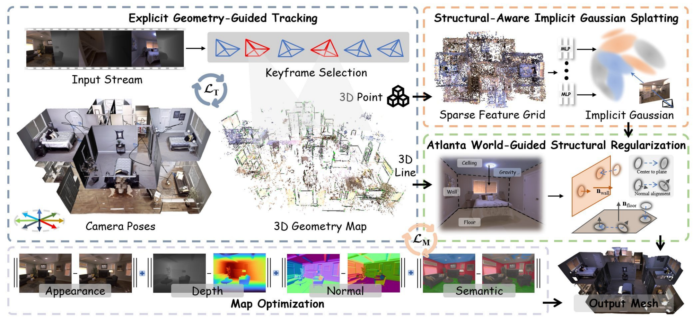
在线输入与跟踪前端（Tracking Front-end） ：按从左到右接收 RGB-D 帧 $\{I_t,D_t\}$，联合提取并关联点特征与线特征，估计相机位姿 $\mathbf T_t\in\mathrm{SE}(3)$；同时依据视角与共视关系选择关键帧，并将二维观测反投影为稀疏三维点集 $\mathcal P$ 和线集 $\mathcal L$。显式几何建图（Explicit Point-Line Geometry） ：持续融合跟踪后的 $\mathcal P,\mathcal L$，以点提供稳定重投影约束、以线提供室内结构方向线索，形成稀疏 3D geometry map；该显式地图既支撑后续帧定位，也向高斯映射后端输送带空间位置的特征。隐式高斯解码（Implicit Gaussian Mapping） ：将三维点体素化/散射为 sparse feature grid，并由轻量级 MLP 解码高斯基元 $\mathcal G_i=(\boldsymbol\mu_i,\mathbf\Sigma_i,\mathbf c_i,\alpha_i)$，分别表示中心、协方差、颜色与不透明度；在线增量更新使地图保持紧凑，并通过可微渲染获得照片级重建。结构平面约束与联合优化（Structural Plane Regularization） ：三维结构线 $\mathcal L$ 在共享重力方向 $\mathbf g$ 的 Atlanta World 先验下诱导平面 $\Pi_k:(\mathbf n_k^\top\mathbf x+d_k=0)$；平面约束联合正则化高斯中心 $\boldsymbol\mu_i$ 与法向 $\mathbf n_i$，再与渲染及几何误差共同优化，输出几何一致、结构规整的室内高斯地图。进入深读卡片查看完整方法与千问问答 →
3.96 导航 / VLN / SLAM 导航 SLAM 2610.41768
本文面向差速轮式机器人，提出紧耦合视觉—惯性—编码器RGB-D SLAM系统VIEOS2，通过生成式编码器测量模型、编码器预积分及相应雅可比，将轮编码器、IMU与RGB-D观测纳入MAP优化和束调整。该方法可在特征点暂时缺失、弱光、快速运动或低帧率条件下维持跟踪，并在自建数据集上实现实时状态估计，轨迹RMSE约为2–7厘米。作者还开源了系统代码及包含编码器信息的农业场景数据集。
📐 查看论文原版模型结构图与讲解（Figure 1 (p.1)） 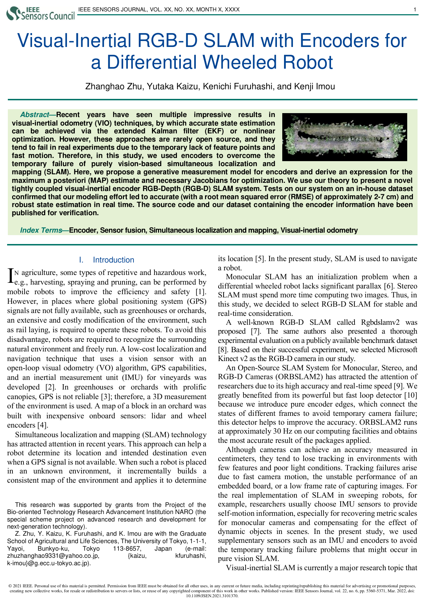
多传感器输入与对齐 ：图中 RGB-D 帧 $\{I_k,D_k\}$、IMU 测量 $\{\boldsymbol\omega_t,\mathbf a_t\}$ 及左右轮编码器读数 $\{u_t^L,u_t^R\}$ 按时间戳汇入系统；视觉前端提取、匹配 ORB 特征，并由深度恢复地图点初值。跨帧运动约束 ：IMU Preintegration 在关键帧间生成旋转、速度和位置增量 $(\Delta\mathbf R,\Delta\mathbf v,\Delta\mathbf p)$；Encoder Preintegration 依据差分轮生成式测量模型与分段平坦地面假设，积分相对运动 $\Delta\mathbf T_{ij}^{e}$，同步传播协方差及偏置雅可比。紧耦合 MAP 优化 ：视觉重投影残差 $\mathbf r_{ij}^{v}=\mathbf z_{ij}-\pi(\mathbf T_i,\mathbf P_j)$、IMU 残差 $\mathbf r_{ij}^{I}$ 和编码器残差 $\mathbf r_{ij}^{e}$ 共同约束状态 $\mathcal X=\{\mathbf T_k,\mathbf v_k,\mathbf b_k,\mathbf P_l\}$；在 g2o 中以 LM 和 Huber 核最小化加权残差和。建图与闭环输出 ：优化贯穿 Motion/Local/Global BA 与 Pose Graph；视觉失效时向 ORBSLAM2 Spanning Tree 加入纯编码器边，VIEOS2 可叠加 IMU 约束，并通过限制连续里程计边及动态回环阈值，最终输出一致的机器人轨迹与稀疏三维地图。进入深读卡片查看完整方法与千问问答 →
3.78 导航 / VLN / SLAM 导航 定位与建图 2610.41671
OpenVIO 是一个采用 MIT 许可证的开源视觉惯性里程计系统，支持单目与双目配置，以及针孔、鱼眼和拼接式 360° ERP 图像。系统以融合持久路标的 MSCKF 为核心，通过单位射线统一不同相机模型，并支持动静态初始化、特征重识别以及相机—IMU 外参与时间偏移在线估计；对双镜头 360° 相机还联合估计拼接误差和后镜头曝光延迟。作者将其与 9 个开源 VIO 系统在 EuRoC 和 TUM-VI 上进行比较，并在 PanoAir 的 17 次飞行中评测；发布配置最多维护 20 个位姿克隆和 150 个持久路标。
📐 查看论文原版模型结构图与讲解（Figure 1 (p.1)） 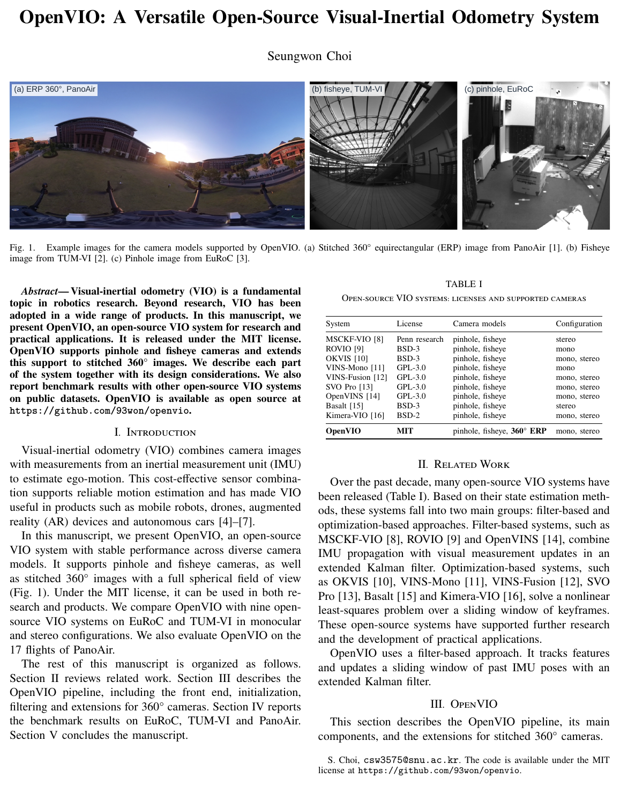
多传感器输入与统一相机接口 ：左侧输入图像 $I_k$ 与 IMU 测量 $u_t=(\boldsymbol\omega_t,\mathbf a_t)$；Camera Model（相机模型）以反投影 $\mathbf r=\pi^{-1}(\mathbf z)$ 将像素变为单位射线，并以 $\mathbf z=\pi(\mathbf r)$ 完成针孔、鱼眼及 ERP 投影。Feature Tracking & Initialization（特征跟踪与初始化） ：金字塔 Lucas–Kanade 光流结合前后向检查、旋转 RANSAC 和网格化管理生成轨迹 $\{\mathbf z_{i,k}\}$；系统按视差选择静态重力/偏置估计或动态联合优化，初始化 $\mathbf R,\mathbf p,\mathbf v,\mathbf b_g,\mathbf b_a$。IMU Propagation 与视觉更新 ：IMU Propagation 按惯性动力学传播状态及协方差 $(\mathbf x_k,\mathbf P_k)$；终止轨迹进入 MSCKF Update，经三角化、零空间投影、卡方门控和 QR 压缩形成残差，长且几何稳定的轨迹则转为 Persistent Landmark（持久逆深度路标）继续约束滑窗。状态标定与输出 ：滤波器联合估计相机–IMU 外参、公共时间偏移；双镜头 ERP 还估计拼接角误差和后镜头曝光延迟。右侧输出每次曝光时刻的 IMU 位姿 $\mathbf T_{WI}(t_k)$，被移除的克隆位姿同步导出为带观测的关键帧。进入深读卡片查看完整方法与千问问答 →
3.53 导航 / VLN / SLAM 导航 目标导航 2610.41456
SAFARI面向未知危险环境中的自主风险巡检，将深度支持的目标检测、与目标尺寸相关的负证据及不确定性统一累积到扩展的概率 lambda field 中，形成持久化语义风险地图。其分层规划器结合前沿探索与视点优化，并综合观测需求、几何可通行性和风险选择巡检路径。在四足机器人跨三个野外场地的11次任务中，系统平均覆盖98.7%的可达任务区域，97.6%的任务时间无需操作员干预，并能检测特征尺寸小至15厘米的目标。
📐 查看论文原版模型结构图与讲解（Figure 9） 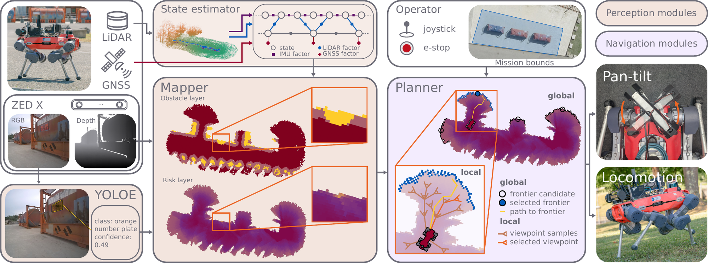
语义 RGB-D 愗知（Semantic RGB-D Perception） ：输入时刻 $t$ 的彩色图像 $I_t$ 与配准深度 $D_t$；开放词汇分割器依据目标提示生成类别掩膜 $M_{t,k}$。掩膜与有效深度反投影并变换至地图坐标系，形成具有空间位置和尺度假设 $k$ 的 OPI 棡测；无有效深度的结果不写入正危险证据。概率多层建图（Probabilistic Multi-layer Mapping） ：将连续观测累积到 lambda field。深度射线分别提供几何 hit/miss 证据；有效检测产生正危险证据，而“目标若存在本应可见、实际却未检出”的区域产生负证据。系统不作占据/空闲、危险/安全的硬判定，而估计几何地形坡度 $\theta_i^{\mathrm{grade}}$、局部残差坡度 $\theta_i^{\mathrm{res}}$、危险强度 $\lambda^{\mathrm{haz}}_{i,k}$ 及 Beta 方差 $V_{i,k}$，由此构成可通行性、危险强度与观测不确定性图层。覆盖规划（Coverage Planning） ：规划器联合查询上述图层，对候选视点与路径按信息增益、可达性和风险进行评价，选择可执行的低风险探索轨迹。机器人运动后获得新的 $I_t,D_t$ 与检测结果并回写地图，进而更新各轨迹效用，形成“感知—建图—规划—再观测”的闭环，使系统无需先验地图即可适应新障碍、地形和危险物。进入深读卡片查看完整方法与千问问答 →
3.17 导航 / VLN / SLAM 导航 定位与建图 2610.41833
PGGT-Loc提出面向结构化地图的图元接地定位范式，并以PGGT跨模态Transformer直接联合编码单张查询图像与平面地图图元，单次前向推理即可估计相对于地图的6-DoF相机位姿。模型通过图像块—图元分配、平面参数预测及多路径位姿推断，在统一架构下同时支持稠密表面地图和极简布局模型，并可泛化到未见环境。论文称其在两类地图上均刷新了定位性能，但所给节选未提供具体数值指标。
📐 查看论文原版模型结构图与讲解（Figure 9） 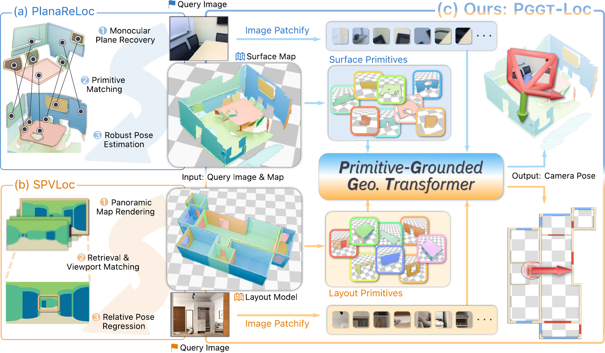
(a) PlaneLoc—显式平面匹配 ：输入查询图像 $\mathbf I_q\in\mathbb R^{3\times H\times W}$ 与平面地图 $\mathcal M=\{\Pi_i^m\}_{i=1}^{N_m}$；先从图像提取二维平面 proposals，再与由参数 $\pi_i^m=[\mathbf n_i^m,d_i^m]$ 及边界环描述的地图平面逐一匹配，依赖离散对应关系求取相机位姿。(b) SPVLoc—全景检索定位 ：针对场景 layout，预先从候选位姿渲染全景图；查询图像特征与全景 rendering 特征进行相似度检索，选出 best-matching panorama，并由其候选位置及朝向恢复相机位姿。该流程本质上以渲染库和最近邻检索连接图像与地图。(c) \(\methodname\)-Loc—统一基元接地 ：图像被划分为 query patches，地图则直接表示为 primitives；跨模态 Transformer 在二者间建立“观测—地图基元”grounding，无需二维平面 proposal、显式匹配或全景候选检索。统一骨干可同时处理 planar maps 与 layouts，并以前馈方式直接回归六自由度位姿 $\mathbf T_q=[\mathbf q_q,\mathbf t_q]\in\mathbb S^3\times\mathbb R^3$，从而泛化到未见环境。进入深读卡片查看完整方法与千问问答 →
2.77 导航 / VLN / SLAM 导航 其他 2610.41477
本文提出带状态约束的可微分演员–评论家模型预测控制框架 AC-SMPC，用多边形顶点描述机器人与障碍物、用半空间描述工作空间，并将局部线性化的分离和包含约束嵌入可微分 MPC。演员根据闭环反馈自适应调整 MPC 的状态权重、控制权重和参考偏移，评论家评估长期性能，同时通过有界惩罚松弛变量构造弹性二次规划以处理局部约束不相容。相较固定代价 MPC，平均导航时间由 12.28 秒降至 9.44 秒，减少 23.1%，平均低速比例由 50.99% 降至 18.01%；仿真与狭窄动态走廊实机实验验证了安全性、效率及仿真到现实迁移能力。
📐 查看论文原版模型结构图与讲解（Figure 2） 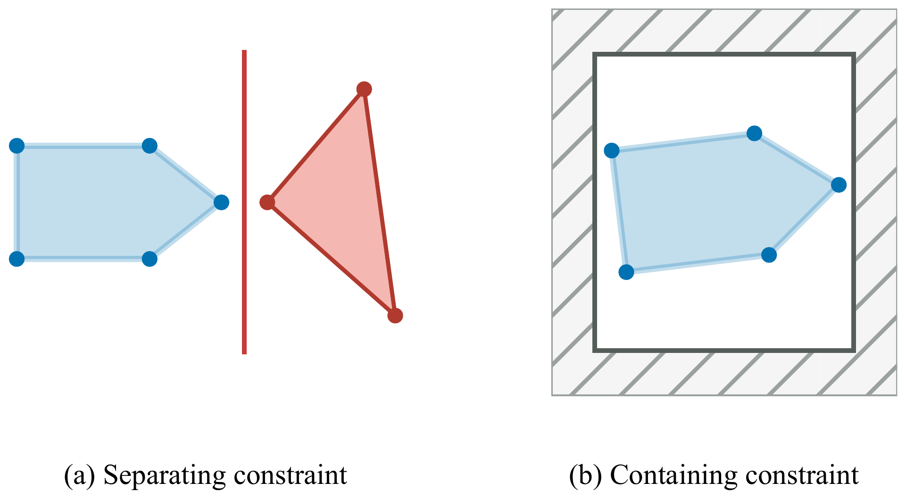
几何输入与多边形建模 ：蓝色多边形表示机器人足迹，其顶点矩阵为 $V_{\mathcal B}(\bm x_{k|t})$；障碍物输入为凸多边形顶点 $V_{\mathcal O_{j,k|t}}$，非凸障碍则拆成多个凸分量。工作空间写为半空间交集 $\mathcal W=\{\bm s\mid G\bm s\preceq\bm h\}$。分离约束（Separating constraint） ：图(a)在机器人与第 $j$ 个障碍物之间引入单位法向超平面 $\mathcal H(\bm\lambda,\mu)$。约束 $\bm\lambda^\mathsf TV_{\mathcal B}\succeq(\mu+d_{\mathrm{safety}})\bm1^\mathsf T$、$\bm\lambda^\mathsf TV_{\mathcal O_j}\preceq\mu\bm1^\mathsf T$，将双方全部顶点置于相反半空间。安全间隔机制 ：$\|\bm\lambda\|_2=1$ 使投影距离具有实际长度意义；$d_{\mathrm{safety}}>0$ 在分离面与机器人之间建立缓冲带，既排除内部重叠，也避免边界接触。包含约束（Containing constraint） ：图(b)逐顶点检查机器人是否位于工作空间内，即对每条边界 $\bm g_l^\mathsf T\bm s\le h_l$ 施加到 $V_{\mathcal B}(\bm x_{k|t})$，等价于 $GV_{\mathcal B}\preceq\bm h\bm1^\mathsf T$，从而使完整具身足迹而非仅质心保持在 $\mathcal W$ 内。进入深读卡片查看完整方法与千问问答 →
灵巧操作 / 接触 · 3
3.56 灵巧操作 / 接触 组合泛化 交互表示/条件接口 2610.41844
SketchMate 将零样本精密插入表示为由少量几何基元和两个配合坐标系组成的 sketch：VLM 决定测量对象，多视角深度几何工具估计插入端、入口、轴向、旋转参考和深度，再由运动规划器与柔顺控制器执行。抓取后，系统通过近距离观察两个配合面并进行形状互补匹配，修正键控零件的旋转对应和亚毫米偏差；sketch memory 还能通过点云配准将一次推理结果迁移到新摆放。在 69 个仿真插入回合中，该方法有 61 个（88%）通过严格运动学装配测试、物理仿真成功率为 91%，而相同 VLM 下的 ReKep 和 MOKA 均为 0；18 个留出连接器全部成功，新摆放时复用 sketch 达到 30/32，并将生成时间从约 90 秒降至 3.4 秒。
📐 查看论文原版模型结构图与讲解（Figure 1） 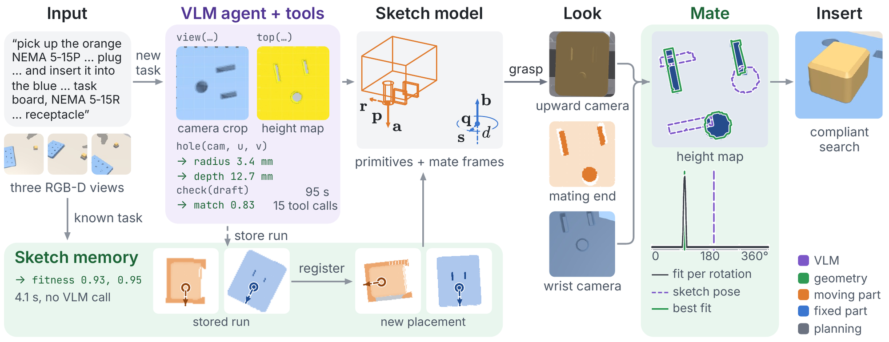
任务草图生成（Task Sketch） ：输入自然语言指令与三路标定 RGB-D 观测 $\{(I_i,D_i)\}_{i=1}^3$。新任务由紫色 VLM Agent（图中 GPT-6.1-Sol）调用几何工具，将深度反投影为点云并输出由少量几何基元、移动件 $A$／固定件 $B$ 的 mate frames 组成的 sketch。草图记忆（Sketch Memory） ：对已知任务，绿色分支直接检索历史 sketch，并仅依赖场景几何将 stored run 配准到当前点云；由此迁移两零件的目标框架与装配关系，无需重新进行视觉语义推理。两条分支最终汇入同一执行表示。抓取与近距校正（Grasp & Look） ：机器人依据 sketch 定位 $A$、规划避障抓取和运输；抓取后利用腕部及桌面朝上相机近距离观测两侧 mating faces，将深橙色移动端轮廓与固定件高度图进行形状匹配，修正相对位姿 $X\in SE(3)$。顺应装配（Compliant Insertion） ：系统选择某个目标装配位姿 $X^\star\in\mathcal{X}^\star$，沿 sketch 指定的单一插入轴执行直线运动；位置／姿态校正结合机械顺应性吸收残余误差，直至插头与插座等配合特征完全啮合。进入深读卡片查看完整方法与千问问答 →
3.11 灵巧操作 / 接触 组合泛化 交互表示/条件接口 2610.41028
CIMI 将“接触如何展开”作为跨人手与机器人手的共享接口：人手和机器人使用具有相同接触面几何与相机布局的指尖模块，并通过视觉跟踪、接触优先重定向和场景视角重投影构造机器人示教。其分层策略先从视觉与本体感觉预测相对接触面轨迹，再由控制器将其转化为协调的腕部与手指指令；采集系统以 10 Hz 同步记录 9 路视频。在 LEAP 和 Wuji 两种灵巧手的 6 个“手–任务”组合上，CIMI 的平均最终阶段成功率比基线至少提高 50 个百分点。
📐 查看论文原版模型结构图与讲解（Figure 1） 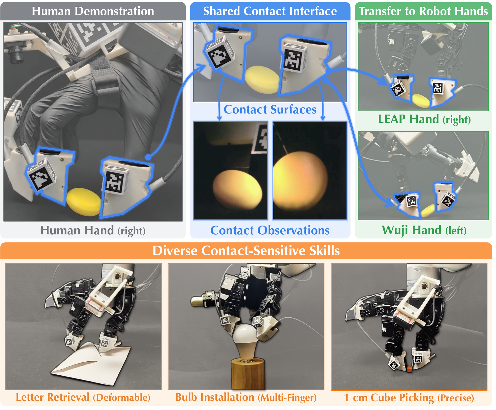
人类示范输入（Human Demonstration） ：操作者佩戴共享指尖模块完成接触敏感操作；模块同步采集第一视角图像 $I_t^{h}$、指尖位姿 $T_t^{h}\in\mathrm{SE}(3)$ 与接触状态 $c_t^{h}$，形成示范轨迹 $\tau^{h}=\{I_t^{h},T_t^{h},c_t^{h}\}_{t=1}^{T}$。共享指尖模块（Shared Fingertip Modules） ：同一硬件先后安装于人手和不同机器人手，为两端提供一致的接触表面与相机视角，使观测 $I_t^{h}$ 与 $I_t^{r}$、接触变量 $c_t^{h}$ 与 $c_t^{r}$具有直接对应关系；该物理接口减少跨形态迁移中的视觉域差异和接触几何偏差。CIMI 技能迁移（Contact-sensitive Skill Transfer） ：CIMI 以人类轨迹 $\tau^{h}$ 为条件，将多指时序关系和局部接触约束映射为机器人执行目标；针对不同手型，通过共享指尖坐标系表达期望运动与接触，使策略 $\pi$ 根据机器人观测 $o_t^{r}=(I_t^{r},q_t^{r},c_t^{r})$ 输出动作 $a_t^{r}=\pi(o_t^{r},\tau^{h})$。机器人执行与任务输出（Robot-hand Execution） ：动作序列驱动不同机器人手复现示范中的接触过程，并由指尖相机形成闭环反馈。图下方展示三类结果：可变形物体操作、多指协调及精确接触，强调迁移目标不是仅复刻关节姿态，而是保持任务关键的接触关系与时序。进入深读卡片查看完整方法与千问问答 →
3.00 灵巧操作 / 接触 组合泛化 从视频学物体运动/affordance 2610.41336
HandMimicX 从单段第一视角 RGB-D 人类视频中联合重建手—物交互，以深度校正手部平移，并提取物体几何及首次接触时的手形、手—物相对位姿和接触区域作为交互先验。其 PPO 教师策略以当前与目标物体点云的对应关系为核心，控制 6-DoF UR5 机械臂和 20-DoF 灵巧手跟踪任意 6-DoF 物体目标位姿，再通过 DAgger 蒸馏为仅使用部分观测的实机学生策略。论文报告了仿真和真实机器人实验，并使用每个物体点云 128 个采样点，但所给节选未包含成功率等定量结果，因而无法准确列出性能数字。
📐 查看论文原版模型结构图与讲解（Figure 1） 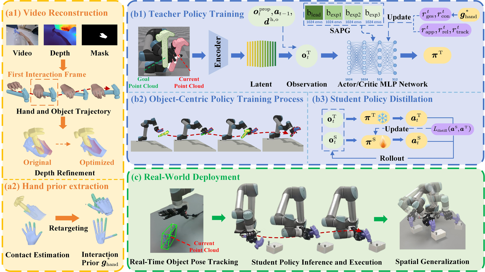
视频重建与对齐（a1） ：输入第一视角 RGB-D 视频，分别恢复被操纵物体的三维几何与手部运动轨迹，并利用逐帧深度观测对二者进行空间对齐，获得一致的手—物交互重建结果。交互先验提取（a2） ：定位手与物体首次接触帧，从该帧提取手部位姿及接触关系，构成策略学习所需的交互先验 $\boldsymbol{g}_{\mathrm{hand}}^{*}$，用于约束灵巧手的初始交互构型。物体中心教师策略（b1–b2） ：对应感知编码器接收当前与目标物体点云并生成几何潜表示；其与本体状态 $\boldsymbol{o}_t^{\mathrm{prop}}$、上一动作 $\boldsymbol{a}_{t-1}$ 及手—物距离 $\boldsymbol{d}^{\mathrm{h,o}}$ 拼接为 $\boldsymbol{o}_t^{\mathrm T}$，送入 Actor/Critic MLP。教师策略 $\boldsymbol{\pi}^{\mathrm T}$ 通过 PPO 与 SAPG 训练，实现物体操控及任意目标位姿跟踪。蒸馏与真实部署（b3–c） ：采用 DAgger 将特权教师 $\boldsymbol{\pi}^{\mathrm T}$ 蒸馏为仅依赖部分观测 $\boldsymbol{o}_t^{\mathrm S}$ 的学生策略 $\boldsymbol{\pi}^{\mathrm S}$；部署到真实机器人后，可执行超越原视频示范的多样化轨迹。进入深读卡片查看完整方法与千问问答 →
青稞速报 / 开源模型发布 · 15
3.00 青稞速报 / 开源模型发布 青稞速报 开源发布 WAM 机器人 青稞
机器人实时控制面临一对天然矛盾：要判断物体如何运动、任务进行到哪一步，需要足够长的视觉历史；但一旦处理历史，动作就会变慢。更关键的是，给模型历史，它不一定会用。 10月27日，青稞Talk 162 期邀请到 Long-WAM 第一作者、香港大学 ECE 博士生（NVIDIA Research Eff
3.00 青稞速报 / 开源模型发布 青稞速报 开源发布 EWAM 世界模型 VLA 青稞
作者：王昊,中山大学博士 01. 倒一杯水之前，大脑先做了什么？ 倒一杯水，看起来只是一个动作。但手还没伸出去，大脑已经忙了一轮：先认出杯子和水壶在哪，再预想手怎么移过去、水会怎么流进杯子，最后才决定手腕倾斜多少、什么时候停。 心理学家 Kenneth Craik 在 1943 年就写过类似的想法：
3.00 青稞速报 / 开源模型发布 青稞速报 开源发布 EmbodiedRSI 机器人 具身 青稞
近年来，机器人学习主要依赖模仿学习：用大量专家示范数据训练策略。但换个任务、变个环境，往往就要重新采集数据、重新训练——成本高，扩展性也差。 更麻烦的是，机器人基础模型在物体位置或任务指令变化时，性能会明显下降；想要进一步改进，又需要大量遥操作数据做后训练。 那么问题来了：能不能让具身智能体像人一样
3.00 青稞速报 / 开源模型发布 青稞速报 开源发布 机器人 具身 青稞
作者：岳博，在香港中文大学（深圳）在读博士 青稞社区为科研人员提供成果宣传支持，如有优秀研究成果分享推广，欢迎投稿联系：aiFreeCode 谈到具身智能，我们很容易想到更强的视觉语言模型、更多的机器人数据，以及更好的控制策略。但有一个问题往往被放在了训练之外：如果机器人的身体本身不适合任务，再聪明
3.00 青稞速报 / 开源模型发布 青稞速报 开源发布 机器人 具身 青稞
具身智能真正的壁垒在数据。 如果类比大模型的发展，大家都会谈 Scaling Law：模型、算力和数据共同决定模型能力。在机器人领域，也已经有研究观察到了类似的 scaling 趋势——随着数据、模型规模和算力增加，机器人策略的性能也会持续提升。 但问题在于，这三件事情的可扩展性并不对称。 模型架构
3.00 青稞速报 / 开源模型发布 青稞速报 开源发布 GroundingPI 基座模型 VLA 青稞
从VLA到WAM，主流的模型都在通用的基座模型作为base model去改造，但通用基座模型真的靠谱吗？ 所谓的具身基模又真的训对了吗？ 当一个基座模型被改造成 VLA、承担 System 1 的执行角色时，最需要的究竟是什么能力或数据？ 人类整理拥挤的桌面，需要先找到杯子和把手，再决定怎样抓取——
3.00 青稞速报 / 开源模型发布 青稞速报 开源发布 GroundingPI 机器人 具身 青稞
先说个场景。 你让机器人去桌上拿那个蓝色杯子，它答得挺快：好，蓝色杯子。 然后手伸过去，抓了个空。 不是它不认识。它认识，甚至能告诉你杯子里有没有水。但它指不准——杯柄在左边还是右边，杯口离桌沿还有几厘米。就差这么一点，手就空了。 第一反应往往是“手”的问题：控制不够精细、动作不够稳。但把这两篇论文
3.00 青稞速报 / 开源模型发布 青稞速报 开源发布 WAM 机器人 青稞
机器人要做到实时控制，需要足够长的视觉历史，来判断物体怎么动、任务进行到了哪一步；但只要开始处理历史，动作就会变慢——这是一对天然矛盾。 更微妙的问题在于：给模型历史，它就会用吗？ 来自 NVIDIA、MIT、香港大学与 UCSD 的团队提出 Long-WAM——一个面向实时控制约束、系统性扩展因果
3.00 青稞速报 / 开源模型发布 青稞速报 开源发布 世界模型 青稞
让模型继续变强，眼下最缺的往往不是想法，而是反馈：代码修复要跑测试，化学反应要上实验台，免疫研究要做湿实验。每一次执行都是真实成本。 反馈一贵，问题就从“怎么改”变成“先试哪个”。同一个 coder 给出四个候选补丁，同一轮里只执行其中一个；同一批反应条件，实验台只给 40 次机会。选错一次，机会就
3.00 青稞速报 / 开源模型发布 青稞速报 开源发布 青稞
转眼间已经距离Astra横空出世过去了好几个月了，这段时间也出了非常多的RSI、Harness系统刷爆了仿真，特别是之前被誉为珠峰的Robodojo，平均一周榜首换两三个，还基本上都是Agentic系统。 在这个狂欢下，我们不禁注意到，仍然有若干问题是agent无法解决的，以及一些是即使到GPT7、
3.00 青稞速报 / 开源模型发布 青稞速报 开源发布 机器人 微调 权重 青稞
作者：Kaichen Zhou 青稞社区为科研人员提供成果宣传支持，如有优秀研究成果分享推广，欢迎投稿联系：aiFreeCode 每任务 24 条参考轨迹，只引导一个内部特征，动作模型权重保持冻结。 在三项真实机器人任务上，SteerAct 将平均成功率从 31.1% 提升至 52.2%：增加 21
3.00 青稞速报 / 开源模型发布 青稞速报 开源发布 机器人 青稞
作者：Kaichen Zhou 青稞社区为科研人员提供成果宣传支持，如有优秀研究成果分享推广，欢迎投稿联系：aiFreeCode 每任务 30 条遥操作示范，让触觉在视觉更新之间及时修正动作。 在四项真实机器人任务上，T-WLA 将平均成功率从 17.0% 提升至 50.0%，增加 33 个百分点。
3.00 青稞速报 / 开源模型发布 青稞速报 开源发布 World Action UNITAS WAM 青稞
只有 1.7B 参数，却在双臂操作基准上超过 6B、8B 模型；四个操作基准，全部拿下论文对比方法中的最高整体成功率。 世界动作模型（World Action Model，WAM）的竞争，迎来了一条值得关注的新路线。 当不少研究还在借助预训练视频模型学习动作与未来画面时，香港中文大学（深圳）团队推出
3.00 青稞速报 / 开源模型发布 青稞速报 开源发布 GitHub 机器人 具身 青稞
作者: Baiqiao Yin https://yyyybq.github.io/blog/phd-blind-man-and-cat/ GPT-6 正在操控一台双臂机器人插花。握着花的那只手臂，腕部相机看不见瓶口；于是它把空着的另一只手臂挪过去，让那只手臂的相机对准瓶口，再把花插进去。 没有人教过
3.00 青稞速报 / 开源模型发布 青稞速报 开源发布 世界模型 机器人 具身 青稞
机器人数据不够用，是个老问题。 更麻烦的是换个本体就不好用：同一段“把杯子放进盒子”的视频，夹爪录的换到灵巧手上，手型和接触全变了；机械臂、人形机器人、夹爪、灵巧手，动作空间对不上，一批数据往往只能喂一个本体。另一边，人类的第一人称视频多到用不完，可它和机器人之间隔着一层本体差异。 来自南洋理工大学
其他 · 1
2.73 其他 π系列 其他 2610.42053
REA 是一种面向具身智能的三级异步运行时：System 2 负责生成与评判，System 1 通过路由记忆、边界触发的评判门和共享预算升级阶梯调度策略，System 0 则执行 VLA、全身控制器或代码策略，并保证运行中的策略无需等待慢速“大脑”。在 LIBERO-Pro 的 60 个任务、3000 个测试回合中，REA 达到 95.9% 成功率，高于策略池中最佳单体基线的 94.7%，同时减少 25% 控制步数和 17% 控制时间；在 RoboTwin 2.0 的 100 个回合中，VLA 路由和 VLA+代码分别达到 84% 与 86%，高于 MEDex 的 80%。该运行时还迁移到 BEHAVIOR-1K 和真实 Unitree G1，后者完成 8/10 次试验。
📐 查看论文原版模型结构图与讲解（Figure 10） 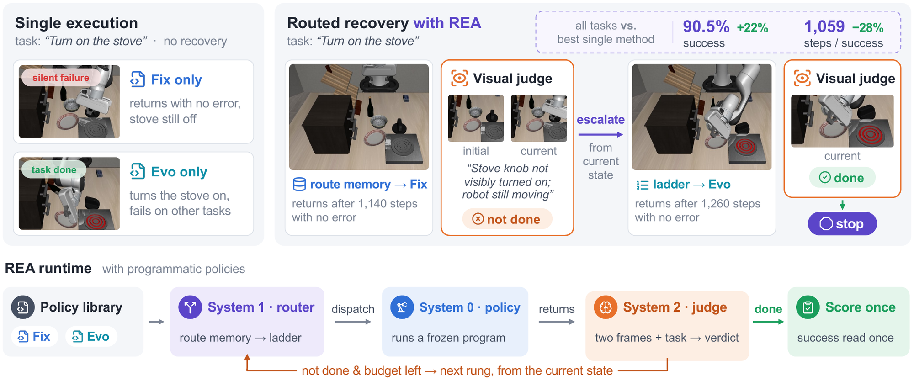
单策略基线（Fix/Evo） ：输入任务指令 $g$ 与初始观测 $I_0$，执行程序策略 $\pi_k$ 产生动作序列 $a_t=\pi_k(I_t,g)$。Fix 可能在任务未完成时终止；Evo 虽可合成更强策略，但离线搜索与生成成本更高。视觉判定门（Visual Judge） ：每轮将初始帧 $I_0$、当前帧 $I_t$ 和指令 $g$ 联合输入视觉判定器，输出完成判断 $d_t=J(I_0,I_t,g)\in\{\mathrm{done},\mathrm{not\ done}\}$；若为 not done，则继续路由而非读取评测成功信号。程序执行与路由（Program Executor/Router） ：执行器运行离线生成并冻结的程序集合 $\Pi=\{\pi_1,\ldots,\pi_K\}$；路由器依据当前状态 $s_t$ 和 route memory 中的路由表选择下一策略 $\pi_{k_{t+1}}=R(s_t,g,M)$，并按 first/other/first escalation ladder 逐级切换。共享预算与停止评测 ：所有策略调用共同消耗统一预算 $B$，满足 $\sum_k c_k\le B$；当 $d_t=\mathrm{done}$ 或预算耗尽时停止。真实成功标记 $y$ 仅在停止后读取一次，只用于最终评估，不参与判定、路由或策略执行。进入深读卡片查看完整方法与千问问答 →